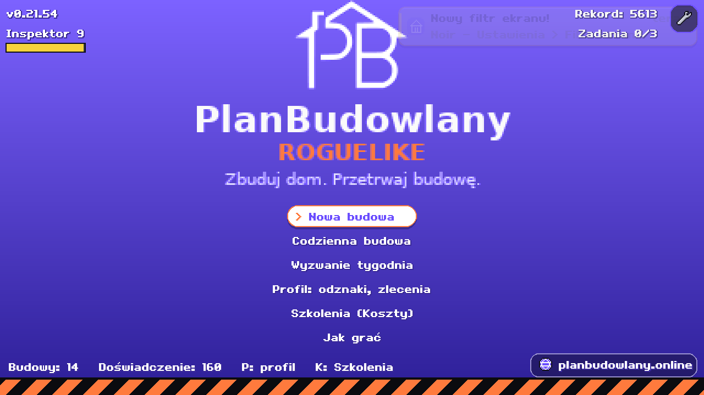
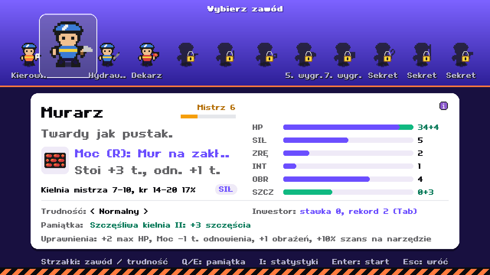
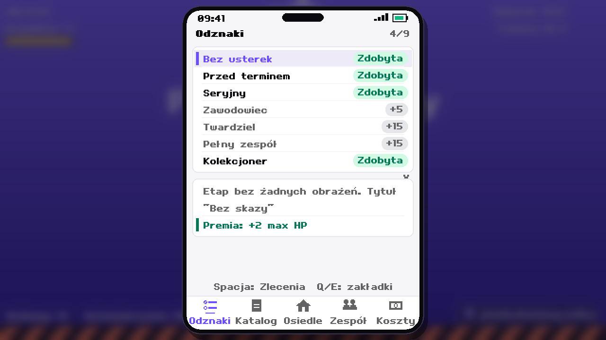
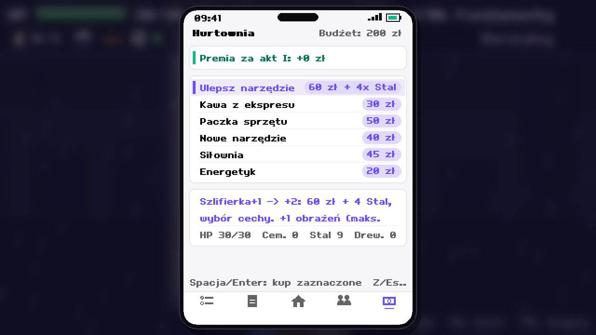
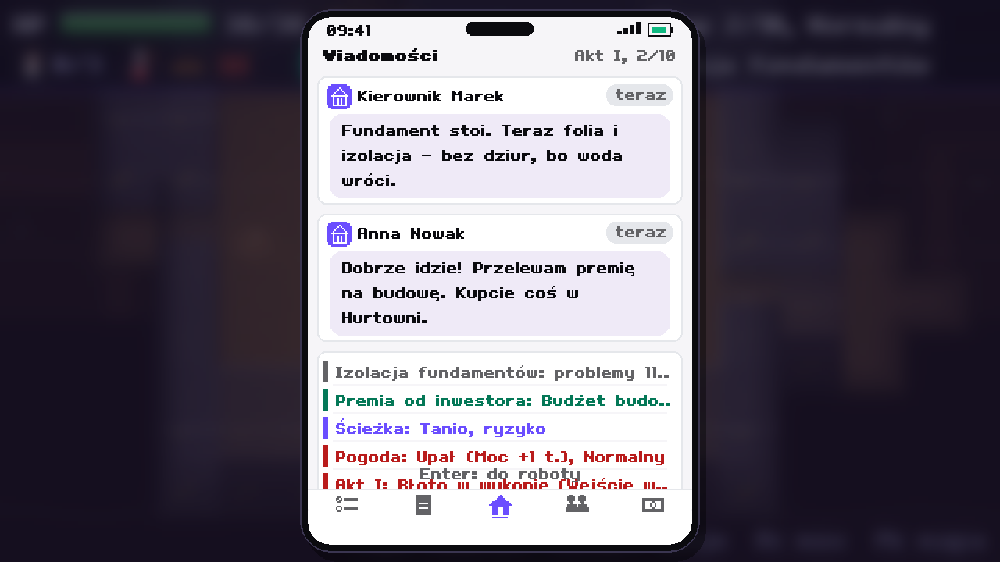

PlanBudowlany – UX i flow doświadczenia
Wersja v0.21.54 · Godot 4.7.2 · propozycja do zatwierdzenia · 2026-10-19
1. Główny problem
P1Doświadczenie zbierane, ale nie wydawane w naturalnym momencie.
Tytuł pokazuje „Doświadczenie: 160”, ale nie prowadzi do akcji. Po budowie nie ma kroku „wydaj XP”.
Gracz dowiaduje się o Hurtowni i Kosztach przypadkiem.
2. Flow – obecny i proponowany
Obecnie
Tytuł
↓
Nowa budowa
↓
Etapy … koniec budowy
↓
Wynik (wygrana / przegrana)
↓
Tytuł XP leży w pasku, brak akcji
Proponowane
Tytuł karta postępów: XP, Budowy, Rekord, Wydaj
↓
Nowa budowa jeśli XP > 0: modal (krok 4)
↓
Etapy … koniec budowy
↓
Wynik budowy wygrana / przegrana · „Zdobyte XP: +N”
↓
Wydaj doświadczenie Hurtownia / Koszty (1 przycisk)
↓
Nowa budowa albo Tytuł
Krok 4 – modal na starcie nowej gry (XP > 0)
MASZ 160 DOŚWIADCZENIA DO WYDANIA
Hurtownia czeka na Twoją decyzję. Co wybierasz?
[ Ulepsz teraz ] [ Zacznij budowę ]
☐ Nie pytaj ponownie (flaga w profilu)
3. Ekran wyniku budowy (nowy)
BUDOWA ZAKOŃCZONA – WYGRANA
Etapy: 11/11 · Budżet: 40 zł · Czas: 143 kroki
ZDOBYTE DOŚWIADCZENIE: +160
Respekt: +3 · Odznaki: 2 nowe
Łączne doświadczenie: 160
[ Wydaj doświadczenie ] [ Zakończ ]
Przegrana: ten sam ekran, nagłówek „Budowa przerwana”, XP też zapisane. Wyświetlany jest jeden powód przegranej.
4. Tytuł – karta postępów
PLANBUDOWLANY
[ Nowa budowa ]
[ Kontynuuj budowę ] (gdy jest zapis)
[ Szkolenia ] [ Jak grać ] [ Ustawienia ]
TWOJE POSTĘPY
Doświadczenie 160 · Budowy 14 · Rekord 5 etapów
Wydaj (bez zmiany ekranu tytułu)
Zmiana względem obecnego: „Inspektor 9” przenosi się do profilu, pasek dolny znika.
5. Ekrany – co zmienić
P2Tytuł (zrzut)

P2Wybór zawodu (zrzut) – obcięte etykiety, zablokowane sloty bez podpowiedzi

P3Telefon – zakładki i odznaki (zrzut) – niejasne „Zdobyta” / „+5”

P2Hurtownia (zrzut) – urwane opisy, brak wskaźnika „stać mnie”

P3Karta etapu z wydarzeniem (zrzut) – brak legendy kolorów

6. Tabela zmian
| # | Zmiana | Priorytet | Dotyczy |
|---|
| 1 | Ekran wyniku z „Wydaj doświadczenie” | P1 | Godot i GBA |
| 2 | Modal przy starcie z XP > 0 + flaga w profilu | P1 | Godot i GBA |
| 3 | Karta postępów na tytule (zamiast paska dolnego) | P1 | Godot |
| 4 | Skrócone etykiety, test na 1280x720 i telefonie | P2 | Godot |
| 5 | Wskaźnik „stać mnie” w Hurtowni | P2 | Godot i GBA |
| 6 | Podpowiedź blokady zawodu (stały tekst) | P2 | Godot |
| 7 | Legenda kolorów w wiadomościach i kartach | P3 | Godot i GBA |
| 8 | „Inspektor” przeniesiony do profilu | P3 | Godot |
7. Otwarte pytania
- Czy modal przy starcie ma być domyślny, czy tylko po pierwszej przegranej/wygranej?
- Czy XP wydawane w Hurtowni ma być tym samym zasobem co Respekt, czy osobnym?
- Wersja GBA: ten sam przepływ czy uproszczony (tylko ekran wyniku)?